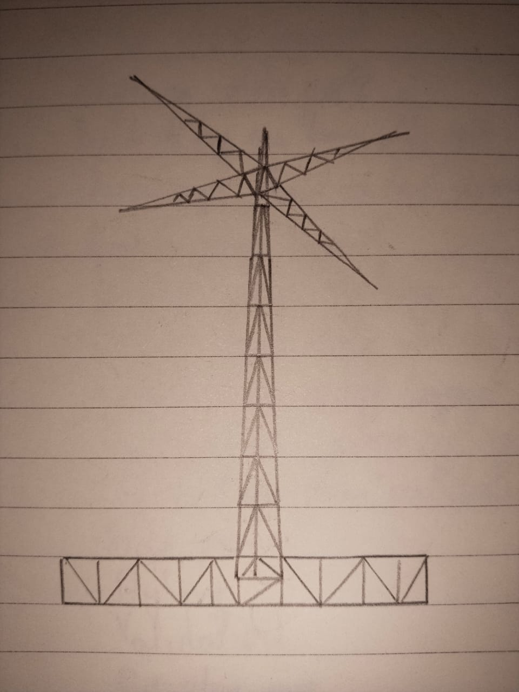

Please use a browser that supports "canvas"

Drawing Mode:
Shape Color:
Red
Green
Blue
Alpha
Shape Size:
(Circles) Segment Count:
Awesomeness!
Added color alpha slider to control transparency.
Added ability to draw an inverted triangle by extending Triangle class.